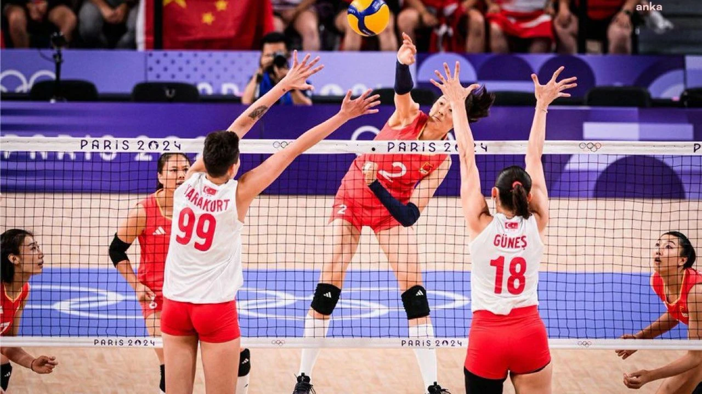

Merhaba! Ben Nazife
Ben Sakarya Üniversitesi Bilgisayar Mühendisliği öğrencisiyim.
Hobilerim
Boş zamanlarımda müzik dinlemek, dizi izlemek ve resim yapmak gibi aktivitelerle ilgileniyorum.
Bu aralar izlediğim dizi:

Bu Aralar Sık Dinlediğim Bir Şarkı:
İlgilendiğim Sporlar
Voleybol oynamaktan ve izlemekten çok keyif alıyorum.Ayrıca arkadaşlarımla bisiklet sürmek hoşuma gidiyor.
İzlediğim Voleybol Takımı:
Filenin Sultanları


Filenin Sultanları'nın Cumhuriyet'in 100.Yılında Avrupa Şampiyonluğu: Haber Başlığı Burada
Takip Ettiğim Spor Aktivitesi:
Türkiye Bisiklet Turu

Türkiye Bisiklet Turu Tarihi(Geçmişten-Günümüze): Haber Başlığı Burada